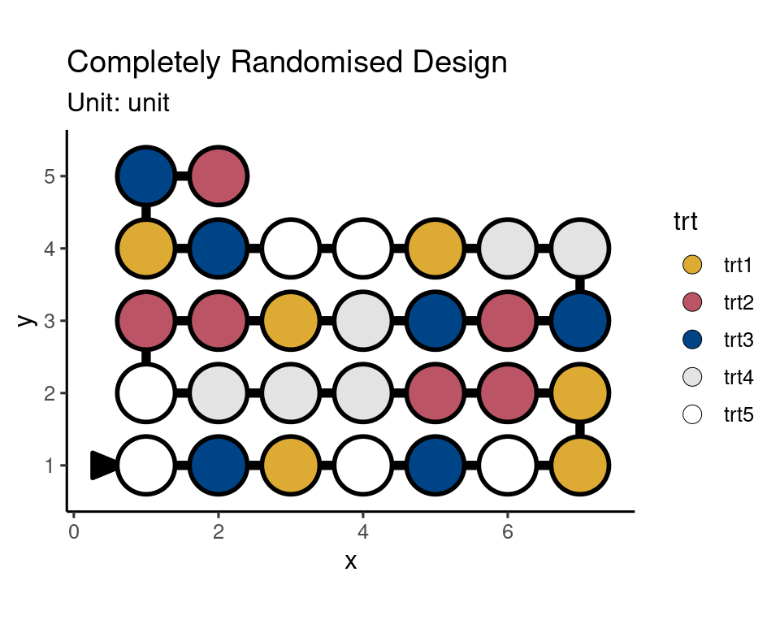
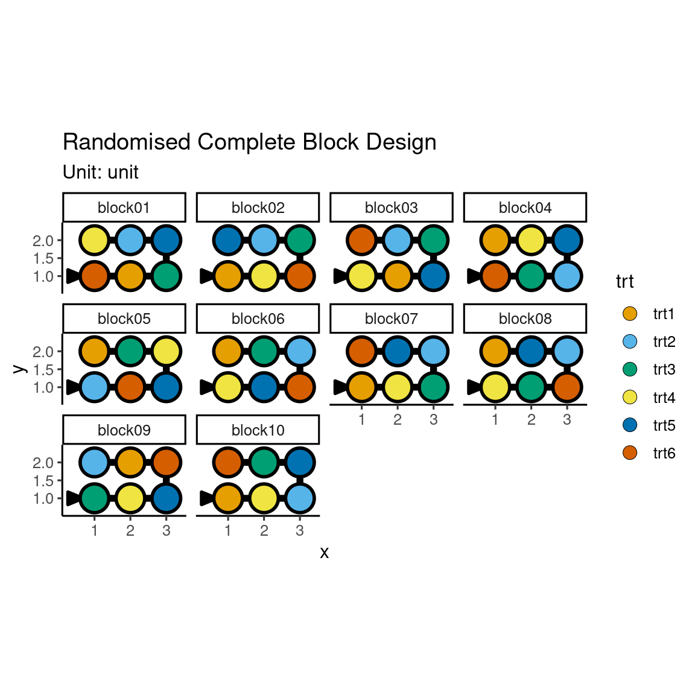
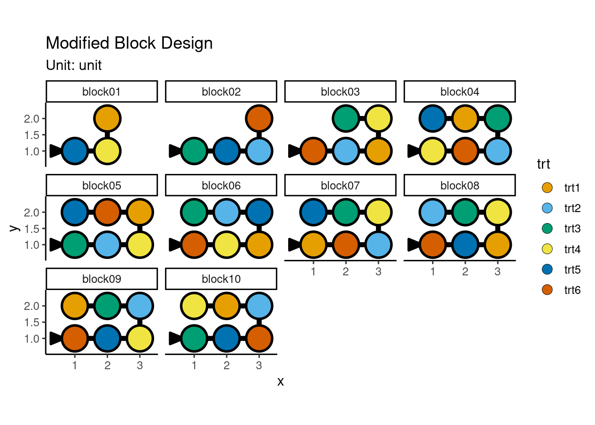
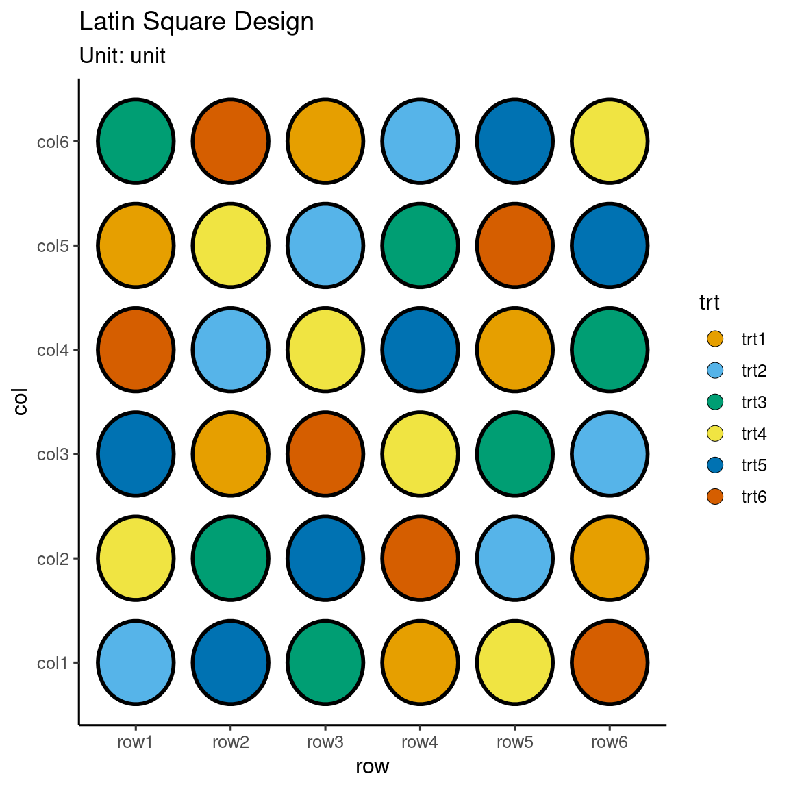
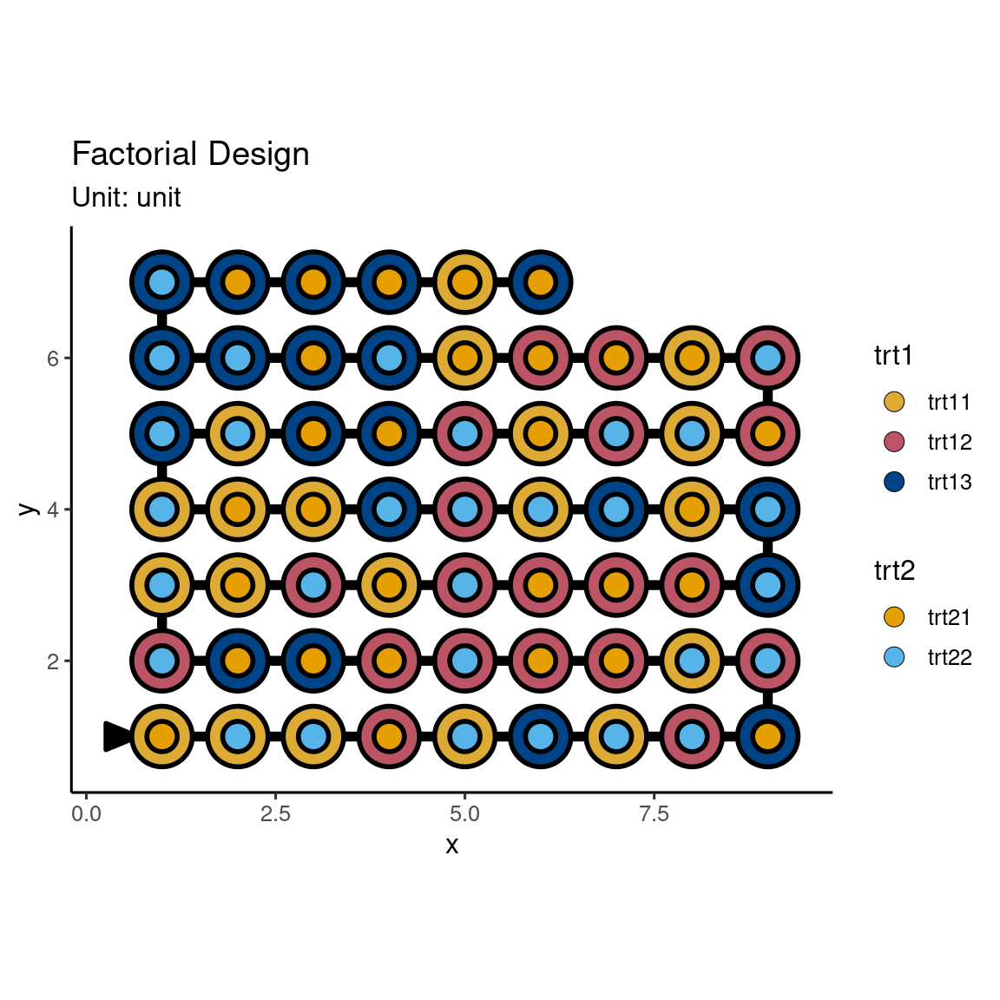
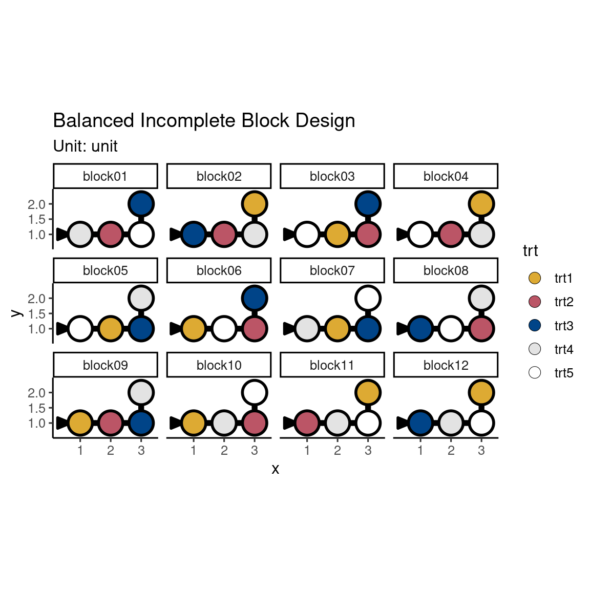
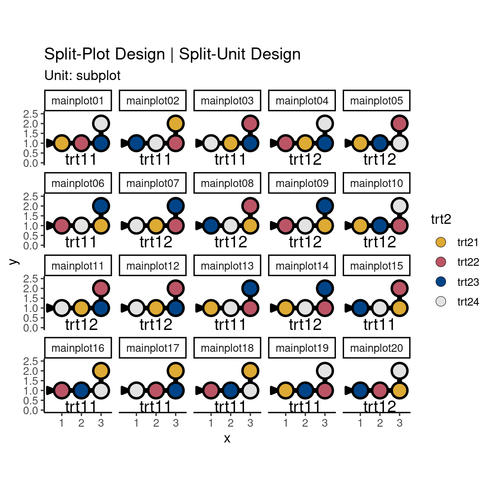
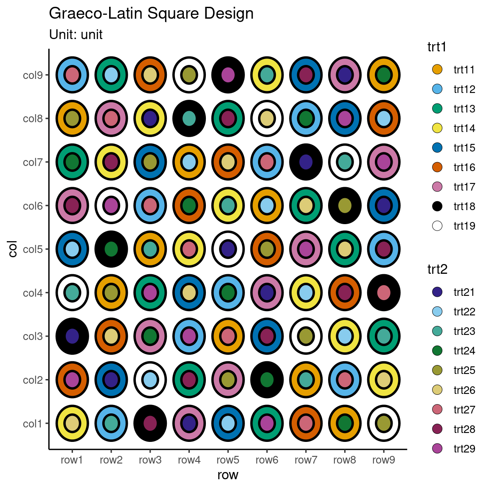
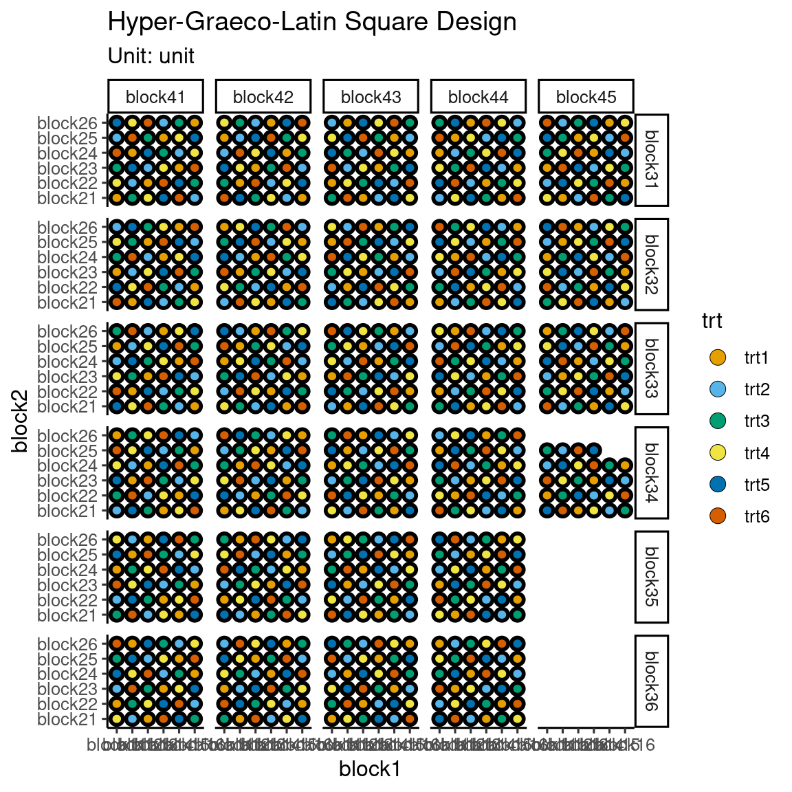
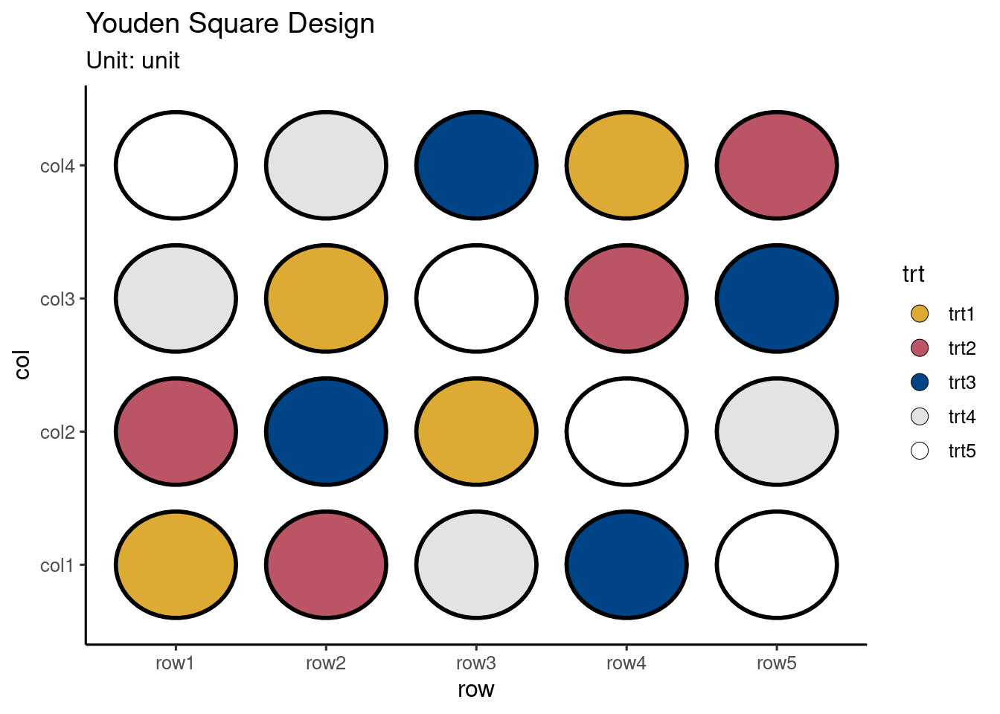

menu_crd()design("Completely Randomised Design") %>%
set_units(unit = 23) %>%
set_trts(trt = 10) %>%
allot_trts(trt ~ unit) %>%
assign_trts("random", seed = 679) %>%
serve_table()Good design considers units and treatments first, and then allocates treatments to units. It does not choose from a menu of named designs.
– Bailey, 2008, Design of Comparative experiments
Every experiment requires a tailored design to properly suit the situation; you shouldn’t simply select an experimental design from a list of named designs. This concept isn’t unique to just experimental designs; take architecture for example where near identical “cookie-cutter” homes get built on masses to make development cheaper but it comes at a detrimental cost when it’s not fit for the landscape. There’s an economical cost that perhaps drive the use of cookie-cutter homes, but what’s the cost of using carefully tailored experimental designs? That you have to think more about the experiment? It’s a small cost if you think about the consequences of an ill-designed experiment. And I’m no real estate expert, but I wouldn’t invest in a cheap home that’s cutting corners to the point that it may have defects.
Named experimental design are handy in succinctly describing the experimental structure and treatment allotment to units, but you lose the direct association to the fundamental components that make up the experimental design. This can obscure seeing the association between different named experimental designs. The idea of the fundamental system in edibble is to encourage higher-order thinking from the user.
The use of named experimental designs is an endemic – it will continue to be prevalent in the field. So a compromising approach is used in the edibble system. For every named experimental design presented, there will be a function prefixed by menu_ that shows the recipe code in terms of the fundamental system. The user is supposed to copy-and-paste these code and modify the names of the units and treatments to their experimental context. You can choose to generate a design table using takeout(), but again I discourage you to use these approaches to generate a proper design.
The following sections present a number of recipes for some well known named experimental designs. The ingredients for each recipe are described in fundamental system terms (see Section @ref(grammar)).
A completely randomised design, commonly abbreviated as CRD, contain two factors: experimental units and treatments with a completely unstructured experiment (i.e. no grouping for the factors). CRD is sufficiently characterised by the number of units, \(n\), and the number of treatment, \(t\). Instead of \(n\), you ccan parameterise the design with the number of replications, \(r\); in which case, you can derive \(n = rt\). The later parameterisation means that the design will be balanced while the former does not guarantee that the design is balanced.
You can call on menu_crd() to see the code in the terms of the fundamental system. If you omit the argument values, then a random parameterisation will be selected for you. You can find more details about the design in the documentation (?menu_crd).
menu_crd()design("Completely Randomised Design") %>%
set_units(unit = 23) %>%
set_trts(trt = 10) %>%
allot_trts(trt ~ unit) %>%
assign_trts("random", seed = 679) %>%
serve_table()If you want to generate the design table, then you can use the takeout() function parsing the named design object created by the set of menu_ functions. If you don’t select any menu then the takeout() function will automatically select a random menu for you. You can find the list of available named experimental designs by calling on scan_menu(). For now, let’s “takeout” the completely randomised design with 5 treatments and 30 experimental units.
crd <- takeout(menu_crd(t = 5, n = 30, seed = 1), )
crddesign("Completely Randomised Design") %>%
set_units(unit = 30) %>%
set_trts(trt = 5) %>%
allot_trts(trt ~ unit) %>%
assign_trts("random", seed = 1) %>%
serve_table()
# Completely Randomised Design
# An edibble: 30 x 2
unit trt
* <unit(30)> <trt(5)>
1 unit1 trt1
2 unit2 trt4
3 unit3 trt3
4 unit4 trt5
5 unit5 trt2
6 unit6 trt5
7 unit7 trt3
8 unit8 trt4
9 unit9 trt2
10 unit10 trt1
# … with 20 more rowsA design table generated by takeout() is an object with a special class of edbl_table. When you print a takeout object, a table will be displayed like a typical edbl_table object but the recipe code will also be displayed prior to the table.
You can quickly plot the design using the autoplot() in the deggust package.
autoplot(crd)
A randomised complete block design, commonly abbreviated as RCBD, is contain two unit factors, a blocking factor and experimental unit factor, and a treatment factor. The experimental unit factor would be nested within the blocking factor with the number of units within each level of the blocking factor, \(k\), equal to the number of treatments, \(t\). Every treatment appears exactly once in each level of the blocking factor, so the number of blocks, \(b\), is the same as the number of replications, \(r\), i.e. \(b = r\).
rcbd <- takeout(menu_rcbd(t = 6, r = 10))
examine_recipe(rcbd)design("Randomised Complete Block Design") %>%
set_units(block = 10,
unit = nested_in(block, 6)) %>%
set_trts(trt = 6) %>%
allot_trts(trt ~ unit) %>%
assign_trts("random", seed = 874) %>%
serve_table()autoplot(rcbd)
Suppose now I tell you that there are only 3 units in block 1 and 4 units in block 2, and 5 units in block 3, while other blocks can have 6 units. How would you modify your design then? Still generate an RCBD but randomly remove the treatment allocation to match the block size? In comparison to the previous design, this design has 6 less units so it’s possible to have 9 replicates for each treatment. Generally you’d want to get close to a balanced design as possible so you have roughly an equal amount of information on all your treatments. If you randomly remove the treatment allocation to match the required block size, there’s no guarantee that you’ll end up with a balanced design. You’ll also find that there’ll be no named experimental design that matches the description of your units so you won’t be able to just select a design from the menu. This is where the edibble system aids you. In the fundamental edibble system, you put the experimental structure first before thinking about the treatment assignment.
mbd <- design("Modified Block Design") %>%
set_units(block = 10,
unit = nested_in(block,
1 ~ 3,
2 ~ 4,
3 ~ 5,
. ~ 6)) %>%
set_trts(trt = 6) %>%
allot_trts(trt ~ unit) %>%
assign_trts("random", seed = 326) %>%
serve_table()autoplot(mbd)
You can see below that the number of replications are equal across the treatments. You can try changing the seed number above to generate another set of design and see if it still holds true (it should!).
table(mbd$trt)
trt1 trt2 trt3 trt4 trt5 trt6
9 9 9 9 9 9 lsd <- takeout(menu_lsd(t = 6))
examine_recipe(lsd)design("Latin Square Design") %>%
set_units(row = 6,
col = 6,
unit = crossed_by(row, col)) %>%
set_trts(trt = 6) %>%
allot_trts(trt ~ unit) %>%
assign_trts("random", seed = 907) %>%
serve_table()autoplot(lsd)
fac <- takeout(menu_factorial(trt = c(3, 2)))
examine_recipe(fac)design("Factorial Design") %>%
set_units(unit = 54) %>%
set_trts(trt1 = 3,
trt2 = 2) %>%
allot_trts(~unit) %>%
assign_trts("random", seed = 339) %>%
serve_table()autoplot(fac)
bibd <- takeout(menu_bibd(t = 5, r = 10, k = 4))
examine_recipe(bibd)design("Balanced Incomplete Block Design") %>%
set_units(block = 12,
unit = nested_in(block, 4)) %>%
set_trts(trt = 5) %>%
allot_trts(trt ~ unit) %>%
assign_trts("random", seed = 32) %>%
serve_table()autoplot(bibd)
spd <- takeout(menu_split(t1 = 2, t2 = 4, r = 10))
examine_recipe(spd)design("Split-Plot Design | Split-Unit Design") %>%
set_units(mainplot = 20,
subplot = nested_in(mainplot, 4)) %>%
set_trts(trt1 = 2,
trt2 = 4) %>%
allot_trts(trt1 ~ mainplot,
trt2 ~ subplot) %>%
assign_trts("random", seed = 666) %>%
serve_table()autoplot(spd)
strip <- takeout(menu_strip(t1 = 3, t2 = 4, r = 9))
examine_recipe(strip)design("Strip-Plot Design | Strip-Unit Design") %>%
set_units(block = 9,
row = nested_in(block, 3),
col = nested_in(block, 4),
unit = nested_in(block, crossed_by(row, col))) %>%
set_trts(trt1 = 3,
trt2 = 4) %>%
allot_trts(trt1 ~ row,
trt2 ~ col) %>%
assign_trts("random", seed = 987) %>%
serve_table()autoplot(strip) + facet_wrap(~block, scales = "free")graeco <- takeout(menu_graeco(t = 9))
examine_recipe(graeco)design("Graeco-Latin Square Design") %>%
set_units(row = 9,
col = 9,
unit = crossed_by(row, col)) %>%
set_trts(trt1 = 9,
trt2 = 9) %>%
allot_trts(trt1 ~ unit,
trt2 ~ unit) %>%
assign_trts("random", seed = 149) %>%
serve_table()autoplot(graeco)
hyper_graeco <- takeout(menu_hyper_graeco(t = 6))
examine_recipe(hyper_graeco)design("Hyper-Graeco-Latin Square Design") %>%
set_units(block1 = 6,
block2 = 6,
block3 = 6,
block4 = 6,
unit = crossed_by(block1, block2, block3, block4)) %>%
set_trts(trt = 6) %>%
allot_trts(trt ~ unit) %>%
assign_trts("random", seed = 49) %>%
serve_table()autoplot(hyper_graeco)Warning: Too manu units so 296 units dropped from the plot. If you want to see
all, use `nnode_max = Inf` or use `page = 2` to see the next set.
youden <- takeout(menu_youden(nc = 4, t = 5))
examine_recipe(youden)design("Youden Square Design") %>%
set_units(row = 5,
col = 4,
unit = crossed_by(row, col)) %>%
set_trts(trt = 5) %>%
allot_trts(trt ~ unit) %>%
assign_trts("random", seed = 901) %>%
serve_table()autoplot(youden)